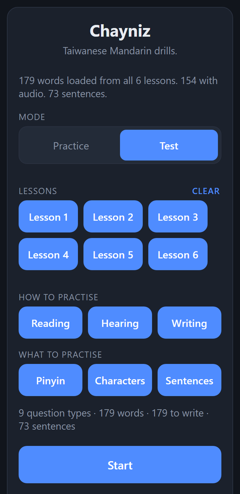
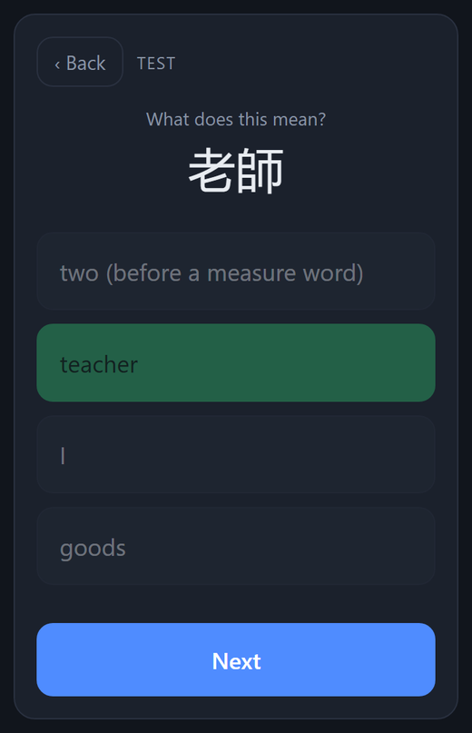
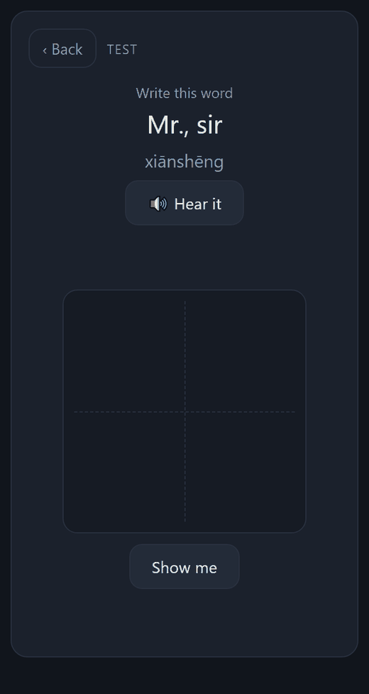
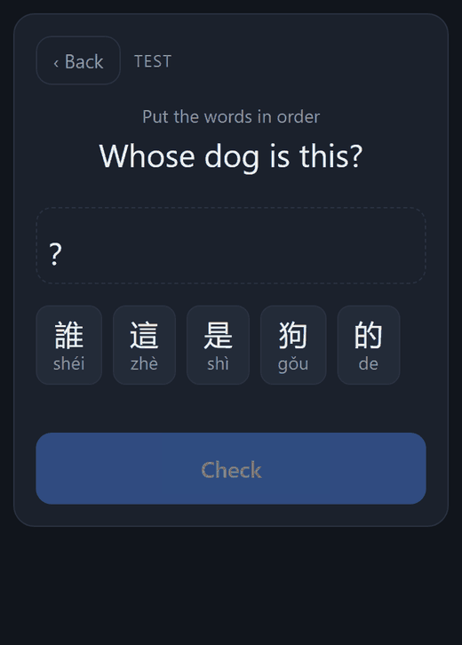
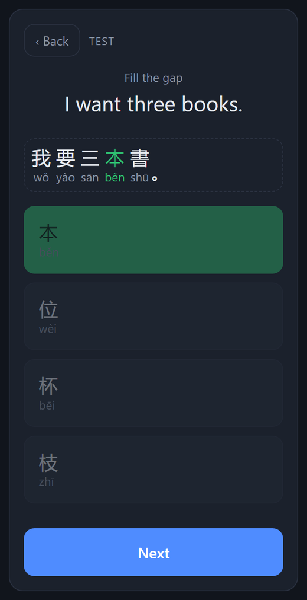
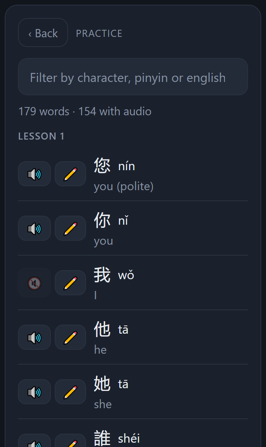
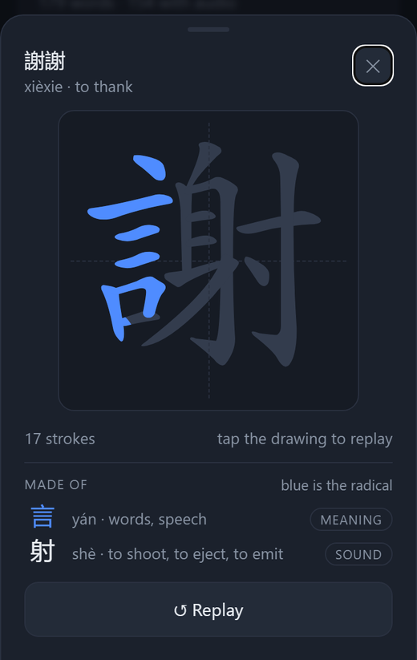

Workshop 1 · Project 1 — a web app
Chayniz
A drill app for learning Taiwanese Mandarin from zero: characters, pinyin, listening, writing and sentences, in quizzes short enough for a spare five minutes on a phone.


What it is, and why
I'm learning Taiwanese Mandarin from zero at NTU, from the textbook 新版實用視聽華語 (Practical Audio-Visual Chinese), vol. 1. I wanted one place to drill what the course asks for: recognising and recalling characters, translating both ways, hearing a word and knowing it — and pinyin, including the parts that trip up a European speaker because they don't sound the way they look (yu is always the ü sound; iu is short for iou). And in sessions short enough for a spare five minutes, not long study blocks.
The interesting part is that a language drill can be wrong in ways that are invisible to a beginner — which is exactly who uses it. A wrong tone mark, a simplified character, a recording with a mainland accent, a multiple-choice question whose answer can be spotted by its length: the learner can't catch any of these, and drills the mistake. So most of this project is about making the content checkably right, not about the screens.
The name is spelled so an English speaker says it right on sight — unlike pinyin yu, which almost everyone reads as English "you".
What it does
Two modes. Test is the quiz; Practice lists the selected lessons as a vocabulary table, every row tappable to hear it, with a pencil button that shows how each character is written. Test mixes four kinds of question, each picked about equally often:
- Word — multiple choice between character, pinyin and English, in eight directions, including two by ear: hear a word, pick its pinyin or characters.
- Write — see the meaning and pinyin, draw the word with a finger, stroke by stroke, with no outline to trace. A stroke in the wrong order or direction is refused and counted.
- Order — the English sentence, and its Chinese words as shuffled tiles to tap into place. This is where grammar gets practised: knowing every word of a sentence is not knowing where 很 goes.
- Gap — the sentence with one word missing, and four options that all fit the grammar of the slot, so only the meaning of the English decides.





How it works
One static page
The whole app is app/index.html: no backend, no build step, no framework, nothing fetched
from a third-party server. Lessons are CSV files, one per textbook lesson, loaded and merged when the page
opens. Nothing is saved — deliberately. Progress tracking was designed and then cut: the only storage a
static page has is the browser's, which iOS wipes for sites you haven't opened in a week. A review
schedule built on that would silently lose your history, which is worse than not pretending to have one.
Questions are generated, not stored
A lesson file holds only facts: characters, pinyin, meaning. Every question and every wrong option is built when it's shown, under rules that each close a way to answer without knowing Chinese:
- Wrong options have the same length as the answer — a two-character answer among one-character options gives itself away.
- Homophones (他 and 她 are both tā) are both kept, since telling them apart is worth drilling, but never offered together when the question is asked by sound.
- The same word asked the same way never repeats its wrong options back to back, so you learn the word rather than the shape of the question.
- Every word comes up once before any repeats.
Real Taiwanese recordings
The audio is Taiwan's Ministry of Education dictionary recordings — real human speech at the ROC standard, not text-to-speech, which has no Taiwanese voice. There is one file per syllable, and a word plays its syllables in sequence. Each file is a nine-second dictionary entry whose licence forbids cutting it, so the files are never trimmed: the app decodes each one, finds where the spoken syllable starts and stops, and plays only that span with short fades.
Writing
Characters are vector outlines from Hanzi Writer, stored in the repository so the app keeps working without anyone else's server. Its quiz mode grades each stroke the learner draws against the next expected one — order, direction, start and end — with the outline hidden, so it is recall and not tracing.
Content that a program checks
Lessons come from the textbook; the sentences were written new for the app (the book's dialogues are
copyrighted, and this repository is public), using each lesson's grammar patterns. A validator,
tools/check_deck.py, checks what a beginner can't: traditional characters only, tone marks
in citation form, every sentence word already taught in that lesson or an earlier one, its pinyin
identical to the vocabulary list, and gap options that don't create a second right answer. It runs on
every commit and on GitHub, and is itself tested against 35 deliberately broken files, one per rule.
How it was built
With Claude Code, following the course's AI method — and the review steps caught real mistakes every time.
- Vision — what I needed: short sessions on a phone, Taiwanese not mainland, nothing to set up.
- Specification and plan —
SPEC.mdandPLAN.md, each task with a test that says what “done” means. - Independent review — a fresh Claude session that hadn't written the plan, asked only for flaws. On the writing/sentences plan it found 14, among them a calibration test that could not actually choose the grading tolerance, and example sentences that broke their own vocabulary rule. A second review read the 73 generated sentences as a native speaker would and found word orders that would have marked right answers wrong.
- Code — task by task, with independent pieces built in parallel by subagents (the validator alongside the app; the six lessons' sentences at once), each commit saying why.
- Test and verify — below, and on my phone.
What was verified
Each check was predicted before running anything, then measured in the real app (headless Chrome driving the page, strokes drawn by replaying each stroke's path as mouse movements).
| Check | Predicted | Measured | |
|---|---|---|---|
| Same word, same direction, shown again: wrong options identical to last time | 0 | 0 in 18,464 repeat showings (20,000 questions) | ✓ |
| Every word asked once before any repeats | 179 different | first 179 questions: 179 different words | ✓ |
| Character answers whose four options all have the answer's length | all | 6,776 of 6,776 | ✓ |
| Word order: tiles dealt already in a correct order | 0 | 0 in 200 deals of one sentence; 0 in every deal over 8,000 questions drawing on all 73 sentences, with characters and with pinyin only | ✓ |
| Share of each question kind, all on | ⅓ each | word 106 · write 99 · sentence 95 of 300 | ✓ |
| Gap options are exactly the four written for it | 20 of 20 | 20 of 20 | ✓ |
| Writing a word stroke by stroke, correctly | “Clean” | “Clean” for 你, 先生, 美國, 你們, 謝謝 | ✓ |
| 大 with its first stroke backwards and its second drawn first | 2 mistakes | “2 mistakes” | ✓ |
| Validator: each broken file caught by its own rule, valid ones pass | 35 of 35 | 35 of 35 | ✓ |
| Grading tolerance chosen by drawing deliberate near-misses on a phone | — | to do: needs a finger | … |
Limits, and what's next
- Nothing is saved between sessions, by design (above) — until there's real storage, there's no spaced repetition.
- 16 syllables were never recorded by the Ministry, including 我 wǒ, so a few words are reading-only; and whole sentences have no audio, since syllables read in isolation aren't speech.
- Lessons 1–6 are in; 7–12 follow the course.